Подборку собрали 16 ноября, прошедшие события скрыты. Свежая афиша — на главной
Подборка · данные на 16 ноября
Куда сходить на свидание в Москве
Здесь 181 план для двоих: прогулка, музей или шоу, а рядом — где поужинать, обычно не дальше 20 минут пешком. 47 планов укладываются примерно в 1 500 ₽ на человека, 70 мы отметили как удачные для первого свидания. Ещё 81 событие на ближайшие две недели — концерты, спектакли и выставки, куда удобно сходить вдвоём. Понравился план — нажми «Позвать сюда»: соберётся приглашение-игра, а ответ с днём и временем вернётся к тебе.
- 181 план
- 291 место
- 81 событие
Готовые планы для свидания 24 из 181
- Дом Пороховщикова · Деревянный терем · м. Арбатская
- 7 минут пешкомДом Мельникова · Архитектура
- 9 минут пешкомA-House Cafe · Кафе
Бревенчатый терем среди каменных домов, цилиндры Мельникова с ромбами окон и кофе на Афанасьевском — тихая сторона центра.
Открыть план: Арбатские переулки без АрбатаПозвать сюда: Арбатские переулки без Арбата
Фото: Lite, CC BY-SA 3.0 · Wikimedia Commons
- Клуб имени Русакова · Авангард Мельникова · м. Сокольники
- 12 минут пешкомСокольники · Парк
Три бетонных зуба зрительного зала над Стромынкой, а потом прогулка по аллеям Сокольников.
Открыть план: Клуб-шестерёнка Мельникова и СокольникиПозвать сюда: Клуб-шестерёнка Мельникова и Сокольники
Фото: Ludvig14, CC BY-SA 4.0 · Wikimedia Commons
- Англиканская церковь Святого Андрея · Концертный зал · м. Александровский сад
- 1 минута пешкомCentrale Bistro · Бистро
Слушаете музыку под неоготическими сводами, а ужинать идёте в бистро через минуту ходьбы. Весь вечер умещается в одном тихом переулке.
Открыть план: Концерт в церкви и бистроПозвать сюда: Концерт в церкви и бистро
Фото: salech hcelas, CC BY 3.0 · Wikimedia Commons
- Перезвон · Кофейня в колокольне · м. Третьяковская
- 9 минут пешкомТретьяковка на Кадашёвской · Музей
Капучино под сводами колокольни XVIII века на Пятницкой, потом выставка в Третьяковке на Кадашёвской набережной.
Открыть план: Кофе в колокольне и КадашиПозвать сюда: Кофе в колокольне и Кадаши
Фото здания: Dmitry Ivanov., CC BY-SA 4.0 · Wikimedia Commons
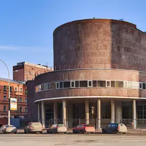
- Здание Центросоюза · Модернизм Ле Корбюзье · м. Сретенский бульвар
- 2 минуты пешкомKeep · Гастробар
Единственное здание Корбюзье в России — розовый туф и стекло, а потом ужин при свечах в Keep через дорогу.
Открыть план: Ле Корбюзье на МясницкойПозвать сюда: Ле Корбюзье на Мясницкой
Фото: Ludvig14, CC BY-SA 4.0 · Wikimedia Commons
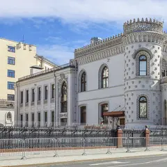
- Особняк Арсения Морозова · Неомавританский особняк · м. Арбатская
- 12 минут пешкомОсобняк Рябушинского · Музей
Ракушки и витые колонны особняка Морозова на Воздвиженке, потом каменная лестница-волна Шехтеля в особняке Рябушинского.
Открыть план: Мавританский замок и лестница-волнаПозвать сюда: Мавританский замок и лестница-волна
Фото: Елена Нечипоренко, CC BY-SA 4.0 · Wikimedia Commons
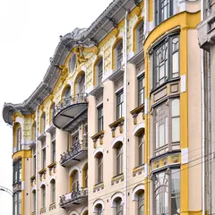
- Доходный дом Исакова · Модерн · м. Парк культуры
- 4 минуты пешкомМансуровский переулок · Старый переулок
- 13 минут пешкомДом Бурганова · Музей скульптуры
Волнистый фасад Кекушева, кривой Мансуровский переулок и дворики Бурганова, где бронза стоит среди кирпичных арок.
Открыть план: Пречистенка: волнистый модерн и сад бронзыПозвать сюда: Пречистенка: волнистый модерн и сад бронзы
Фото: Moreorless, CC BY-SA 4.0 · Wikimedia Commons
- Клуб имени Зуева · Конструктивизм · м. Белорусская
- 9 минут пешкомКультурный код · Кафе
Конструктивизм Голосова: вечером стеклянная лестница светится изнутри. Перед этим — кофе в «Культурном коде» на Чаянова.
Открыть план: Стеклянный цилиндр клуба ЗуеваПозвать сюда: Стеклянный цилиндр клуба Зуева
Фото: Guldfisken, CC BY-SA 3.0 · Wikimedia Commons
- Школа драматического искусства · Театр · м. Сухаревская
- 6 минут пешкомСДВиГ · Бар
Спектакль, затем пять минут пешком до спрятанного во дворе бара с мягким светом и рамёном. Удобно продолжить разговор о постановке.
Открыть план: Театр на Сретенке и бар-лофтПозвать сюда: Театр на Сретенке и бар-лофт
Фото: Brateevsky, CC BY-SA 4.0 · Wikimedia Commons
- Хохловская площадь · Площадь-амфитеатр · м. Китай-город
- 1 минута пешкомOn Sight · Кофейня
Ступени амфитеатра у куска стены XVI века, кривые переулки горки и кофе через дорогу на Покровке.
Открыть план: Хохловка и Ивановская горкаПозвать сюда: Хохловка и Ивановская горка
Фото: T3ru, CC BY-SA 4.0 · Wikimedia Commons
- Сокольники · Парк · м. Сокольники
- 1 минута пешкомGreen Park · Ресторан в парке
Лучевые аллеи в золоте и выход в лес, а потом обед в ресторане прямо в парке.
Открыть план: Аллеи СокольниковПозвать сюда: Аллеи Сокольников
Фото: Alexx Zimin, CC BY-SA 4.0 · Wikimedia Commons
- Арбат · Пешеходная улица · м. Смоленская
- 14 минут пешкомСахалин · Ресторан высокой кухни
Прогулка по Арбату и ужин с панорамой на верхнем этаже отеля на Смоленской.
Открыть план: Арбат и морепродукты сверхуПозвать сюда: Арбат и морепродукты сверху
Фото: Alex 'Florstein' Fedorov, CC BY-SA 4.0 · Wikimedia Commons
- Арбат · Пешеходная улица · м. Смоленская
- 12 минут пешкомWhite Rabbit · Панорамный ресторан
Неспешно по Арбату мимо уличных музыкантов и Стены Цоя, а потом ужин под стеклянным куполом со звездой Michelin и видом на центр.
Открыть план: Арбат и ужин под куполомПозвать сюда: Арбат и ужин под куполом
Фото: Alex 'Florstein' Fedorov, CC BY-SA 4.0 · Wikimedia Commons
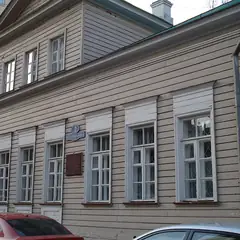
- Дом-музей Лермонтова · Музей · м. Арбатская
- 4 минуты пешкомThe Nappe Bistro · Бистро
Домик Лермонтова на Молчановке и бистро в старинном Скатертном переулке.
Открыть план: Арбатские переулкиПозвать сюда: Арбатские переулки
Фото: Alma Pater, CC BY-SA 3.0 · Wikimedia Commons
- Музтеатр Станиславского · Театр оперы и балета · м. Чеховская
- 3 минуты пешкомTwins Garden · Ресторан высокой кухни
Опера или балет на Большой Дмитровке, а потом ужин в Twins Garden: две звезды Michelin, фермерские продукты и вид на центр с седьмого этажа.
Открыть план: Балет и две звездыПозвать сюда: Балет и две звезды
Фото: NVO, CC BY-SA 3.0 · Wikimedia Commons
- Большой театр · Театр · м. Охотный ряд
- 5 минут пешкомСавва · Ресторан высокой кухни
Спектакль на главной сцене страны, а после ужин в «Савве» в «Метрополе»: современная русская кухня Андрея Шмакова в пяти минутах пешком.
Открыть план: Большой и «Савва»Позвать сюда: Большой и «Савва»
Фото: Юрий Д.К., CC BY 4.0 · Wikimedia Commons
- Большой театр · Театр · м. Охотный ряд
- 4 минуты пешкомМетрополь · Ресторан в историческом отеле
Спектакль на главной сцене страны, а через Театральную площадь — ужин в парадном зале «Метрополя» под витражным куполом с фонтаном.
Открыть план: Большой театр и ужин под куполомПозвать сюда: Большой театр и ужин под куполом
Фото: Юрий Д.К., CC BY 4.0 · Wikimedia Commons
- Большой театр · Театр · м. Охотный ряд
- 6 минут пешкомSavras · Ресторан
Спектакль на главной сцене страны, после — десерт в кондитерской или коктейль в потайном баре Египетского дома.
Открыть план: Большой театр и SavrasПозвать сюда: Большой театр и Savras
Фото: Юрий Д.К., CC BY 4.0 · Wikimedia Commons
- Музей Булгакова · Музей · м. Маяковская
- 8 минут пешкомЗойка · Ресторан
«Нехорошая квартира» №50 в музее Булгакова (по четвергам открыт до 21:00), а потом ужин в «Зойкиной квартире» на Патриарших, где остановилось время.
Открыть план: Булгаковский вечерПозвать сюда: Булгаковский вечер
Фото: NVO, CC BY-SA 3.0 · Wikimedia Commons
- Гоголевский бульвар · Бульвар · м. Кропоткинская
- 4 минуты пешкомНитка · Русская чайная
Гоголевский бульвар под жёлтыми липами и долгий чай в отдельной комнате «Нитки».
Открыть план: Бульвар и самоварПозвать сюда: Бульвар и самовар
Фото: Alina Vozna, CC BY-SA 4.0 · Wikimedia Commons
- Чистые пруды · Бульвар и пруд · м. Чистые пруды
- 12 минут пешкомKeep · Гастробар
Круг по Чистым прудам в сумерках, потом свечи и росписи с ангелами в готическом гастробаре Keep во дворах Мясницкой.
Открыть план: Бульвары и готический ужинПозвать сюда: Бульвары и готический ужин
Фото: SergeyStepykin, CC BY-SA 3.0 · Wikimedia Commons
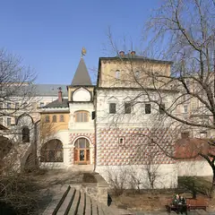
- Палаты бояр Романовых · Музей · м. Китай-город
- 3 минуты пешкомMagritte · Ресторан Аркадия Новикова
Терем XVI–XVII веков на Варварке, где видно, как жили московские бояре, а потом ужин в Magritte Аркадия Новикова с панорамой «Зарядья».
Открыть план: Варварка и МагриттПозвать сюда: Варварка и Магритт
Фото: Ludvig14, CC BY-SA 3.0 · Wikimedia Commons
- Театр Вахтангова · Театр · м. Смоленская
- 15 минут пешкомПанорама · Панорамный ресторан
Спектакль в Театре Вахтангова на Арбате, потом минут пятнадцать пешком до Смоленской — и ужин на 23-м этаже, где за окнами высотка МИД и огни Сити.
Открыть план: Вахтангов и ужин на 23-м этажеПозвать сюда: Вахтангов и ужин на 23-м этаже
Фото: A.Savin, Free Art License · Wikimedia Commons
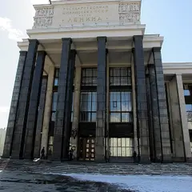
- Ленинская библиотека · Библиотека с видом на Кремль · м. Библиотека имени Ленина
- 18 минут пешкомДом Перцовой · Доходный дом-терем
Бесплатные виды на Кремль из залов Ленинской библиотеки и дом Перцовой с павлинами и райскими птицами у Храма Христа Спасителя.
Открыть план: Виды из Ленинки и сказочный теремПозвать сюда: Виды из Ленинки и сказочный терем
Фото: krassotkin, CC BY 3.0 · Wikimedia Commons


Места, куда зовут на свидание 18 из 291
Театральная пл., 1
Главная сцена страны. Билеты продаются на сайте театра — следите за открытием продаж.
Подробнее и маршрут: Большой театрПозвать сюда: Большой театр
Фото: Юрий Д.К., CC BY 4.0 · Wikimedia Commons
Красная площадь
Главная площадь страны: Кремль, Василий Блаженный, ГУМ и Исторический музей в одном кадре.
Подробнее и маршрут: Красная площадьПозвать сюда: Красная площадь
Фото: mos.ru, CC BY 4.0 · Wikimedia Commons
Большой Патриарший пер.
Пруд из «Мастера и Маргариты»: скамейки, кафе вокруг, зимой — каток.
Подробнее и маршрут: Патриаршие прудыПозвать сюда: Патриаршие пруды
Фото: Dimа, CC BY-SA 3.0 · Wikimedia Commons
Чистопрудный бул.
Бульвар с прудом: летом лодки и лебеди, зимой каток. Рядом Меншикова башня.
Подробнее и маршрут: Чистые прудыПозвать сюда: Чистые пруды
Фото: SergeyStepykin, CC BY-SA 3.0 · Wikimedia Commons
Ботаническая ул., 4
Японский сад в Ботаническом: пагода, водопады и сакура весной. Вход платный.
Подробнее и маршрут: Японский садПозвать сюда: Японский сад
Фото: Carbonkidka, CC BY-SA 4.0 · Wikimedia Commons
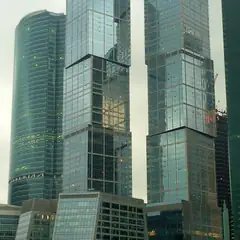
Пресненская наб., 8, стр. 1
Ресторан в Москва-Сити с панорамной террасой, зеленью и фонтанами.
Подробнее и маршрут: Bamboo.BarПозвать сюда: Bamboo.Bar
Фото: BpbAlonka, CC BY-SA 3.0 · Wikimedia Commons
Страстной бул., 8А
Две звезды Michelin 2021
Фермерские продукты и вид на центр с седьмого этажа.
Подробнее и маршрут: Twins GardenПозвать сюда: Twins Garden
Фото: Tamara Ivanova-Issayeva, CC BY-SA 4.0 · Wikimedia Commons
Александровский сад
Сад вдоль Кремлёвской стены: Вечный огонь, Итальянский грот и смена почётного караула.
Подробнее и маршрут: Александровский садПозвать сюда: Александровский сад
Фото: Надежда Пивоварова, CC BY-SA 3.0 · Wikimedia Commons
Вознесенский пер., 8/5, стр. 3
Новое
Неоготическая церковь в переулке у Тверской, где регулярно идут концерты. Рядом сквер с ротондой и фонтаном — удобно совместить с прогулкой.
Подробнее и маршрут: Англиканская церковь Святого АндреяПозвать сюда: Англиканская церковь Святого Андрея
Фото: salech hcelas, CC BY 3.0 · Wikimedia Commons
ул. Арбат
Старейшая пешеходная улица: уличные музыканты, художники, Стена Цоя и квартира Пушкина.
Подробнее и маршрут: АрбатПозвать сюда: Арбат
Фото: Alex 'Florstein' Fedorov, CC BY-SA 4.0 · Wikimedia Commons
ул. Косыгина, смотровая площадка
Лесистый склон над Москвой-рекой. У главного здания МГУ — смотровая с видом на Лужники и Сити.
Подробнее и маршрут: Воробьёвы горыПозвать сюда: Воробьёвы горы
Фото: Niklitov, CC BY-SA 4.0 · Wikimedia Commons
пр. Андропова, 39
Холмы над рекой, белая церковь Вознесения и деревянный дворец царя Алексея Михайловича.
Подробнее и маршрут: КоломенскоеПозвать сюда: Коломенское
Фото: Ludvig14, CC BY-SA 4.0 · Wikimedia Commons
Большая Садовая ул., 10
«Нехорошая квартира» №50, где жил Булгаков. Вт–вс, по четвергам до 21:00.
Подробнее и маршрут: Музей БулгаковаПозвать сюда: Музей Булгакова
Фото: NVO, CC BY-SA 3.0 · Wikimedia Commons
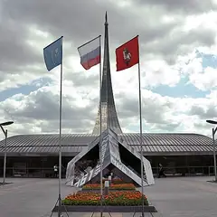
пр. Мира, 111
Под монументом «Покорителям космоса»: настоящие спускаемые аппараты, скафандры и макет станции «Мир».
Подробнее и маршрут: Музей космонавтикиПозвать сюда: Музей космонавтики
Фото: Музей космонавтики, CC0 · Wikimedia Commons
Крымский Вал, 2
Парк скульптур и прогулка по набережной Москвы-реки.
Подробнее и маршрут: МузеонПозвать сюда: Музеон
Фото: sailko, CC BY-SA 3.0 · Wikimedia Commons
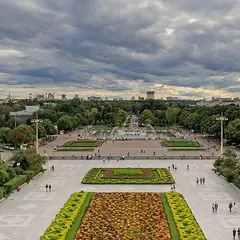
ул. Крымский Вал, 9
Главный парк города: набережная, Голицынский пруд, летние веранды, а зимой — большой каток.
Подробнее и маршрут: Парк ГорькогоПозвать сюда: Парк Горького
Фото: A.Savin, Free Art License · Wikimedia Commons
ул. Пятницкая, 42
Отель-ресторан с садом, вермутерией и галереей в Замоскворечье. 9–00.
Подробнее и маршрут: РихтерПозвать сюда: Рихтер
Фото здания: Kemal KOZBAEV, CC BY-SA 4.0 · Wikimedia Commons
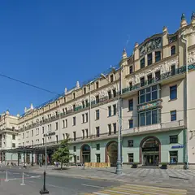
Театральный пр., 2
Звезда Michelin 2021
Современная русская кухня Андрея Шмакова в «Метрополе».
Подробнее и маршрут: СавваПозвать сюда: Савва
Фото: A.Savin, Free Art License · Wikimedia Commons


Куда сходить вдвоём в ближайшие две недели 8 из 81
Театр Наций, Основная сцена · м. Чеховская · 18+
Главная премьера осени: Шолохов глазами китайского мастера Моу Сэня и режиссёра Мурата Абулкатинова. Пять часов с двумя антрактами, начало в 18:00.
Подробнее: Тихий ДонПозвать сюда: Тихий ДонБилеты : Тихий Дон (страница с билетами, откроется в новой вкладке)
Фото: Mike1979 Russia, CC BY-SA 3.0 · Wikimedia Commons
Театр Вахтангова, Основная сцена · м. Смоленская · 1 500–15 000 ₽ · 16+
Толстой в постановке Римаса Туминаса: почти пять часов с двумя антрактами, без громоздких декораций — всё держится на актёрах.
Подробнее: Война и мирПозвать сюда: Война и мирБилеты : Война и мир (страница с билетами, откроется в новой вкладке)
Фото: A.Savin, Free Art License · Wikimedia Commons
ГМИИ им. А. С. Пушкина, Галерея искусства стран Европы и Америки, зал 16 · м. Кропоткинская
Камерная выставка о французском коллекционере Гюставе Файе, поклоннике Гогена, и его связях с русскими собирателями. Один зал — на час; по понедельникам закрыто.
Подробнее: Гюстав Файе и русские коллекционерыПозвать сюда: Гюстав Файе и русские коллекционерыБилеты : Гюстав Файе и русские коллекционеры (страница с билетами, откроется в новой вкладке)
Фото: Ghirlandajo, CC BY-SA 3.0 · Wikimedia Commons
Театр Пушкина, Филиал · м. Тверская · 18+
Шекспир в жанре кабаре от Никиты Пирожкова: музыка, пластика и пророчества ведьм за 1 ч 20 мин. Камерный зал Филиала в Сытинском переулке.
Подробнее: Макбет. КабареПозвать сюда: Макбет. КабареБилеты : Макбет. Кабаре (страница с билетами, откроется в новой вкладке)
Фото: A.Savin, FAL · Wikimedia Commons
Гастротеатр «Калейдоскоп» · м. Охотный ряд · 18 000–25 000 ₽ · 12+
Гастрошоу у Манежной: два часа путешествия от пирамид Гизы до садов Семирамиды, к каждому чуду — свой сет. Вариант для особого свидания.
Подробнее: 7 чудес светаПозвать сюда: 7 чудес светаБилеты : 7 чудес света (страница с билетами, откроется в новой вкладке)
Фото: A.Savin, CC BY-SA 3.0 · Wikimedia Commons
ГМИИ им. А. С. Пушкина, Галерея искусства стран Европы и Америки · м. Кропоткинская
Кубинские киноафиши и плакаты 1950–70-х — больше 140 листов дерзкой графики. Зайдёт и тем, кто к музеям обычно равнодушен. По понедельникам закрыто.
Подробнее: Кубинский плакат. 1950–1970-е. Кино и революцияПозвать сюда: Кубинский плакат. 1950–1970-е. Кино и революцияБилеты : Кубинский плакат. 1950–1970-е. Кино и революция (страница с билетами, откроется в новой вкладке)
Фото: Ghirlandajo, CC BY-SA 3.0 · Wikimedia Commons
Иммерсивный театр «Морфеус» · м. Павелецкая · 3 900–4 900 ₽ · 16+
Иммерсивная комедия с закрытыми глазами: семь зрителей попадают в Москву 1903 года с театральными интригами и кафе. Полтора часа, несколько сеансов в день.
Подробнее: Поезд, Чехов, два орлаПозвать сюда: Поезд, Чехов, два орлаБилеты : Поезд, Чехов, два орла (страница с билетами, откроется в новой вкладке)
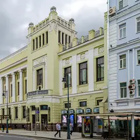
Ленком Марка Захарова, Основная сцена · м. Пушкинская · от 3 200 ₽ · 16+
Спектакль Владимира Панкова об Остапе Бендере: динамично, музыкально и смешно. Можно звать и девушку, и друзей.
Подробнее: Великий комбинаторПозвать сюда: Великий комбинаторБилеты : Великий комбинатор (страница с билетами, откроется в новой вкладке)
Фото: Никонико962, CC BY-SA 4.0 · Wikimedia Commons


Как позвать
- Выбери план, место или событие — в карточке адрес, цены и маршрут в Яндекс Картах.
- Нажми «Позвать сюда» — соберётся приглашение-игра для свидания или голосование для компании.
- Отправь ссылку в любой мессенджер: тебе ответят, а компания отметит, куда и когда может. Бесплатно и без регистрации.